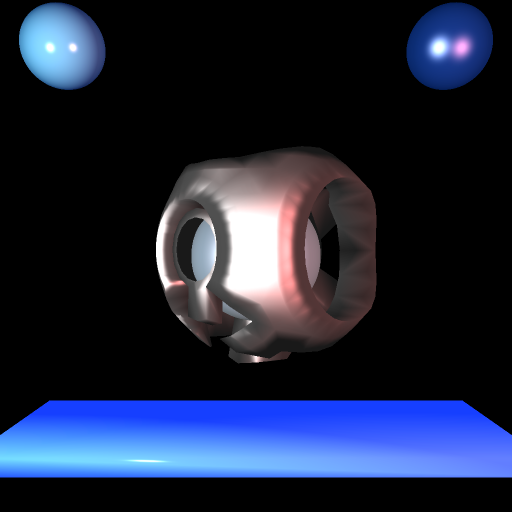
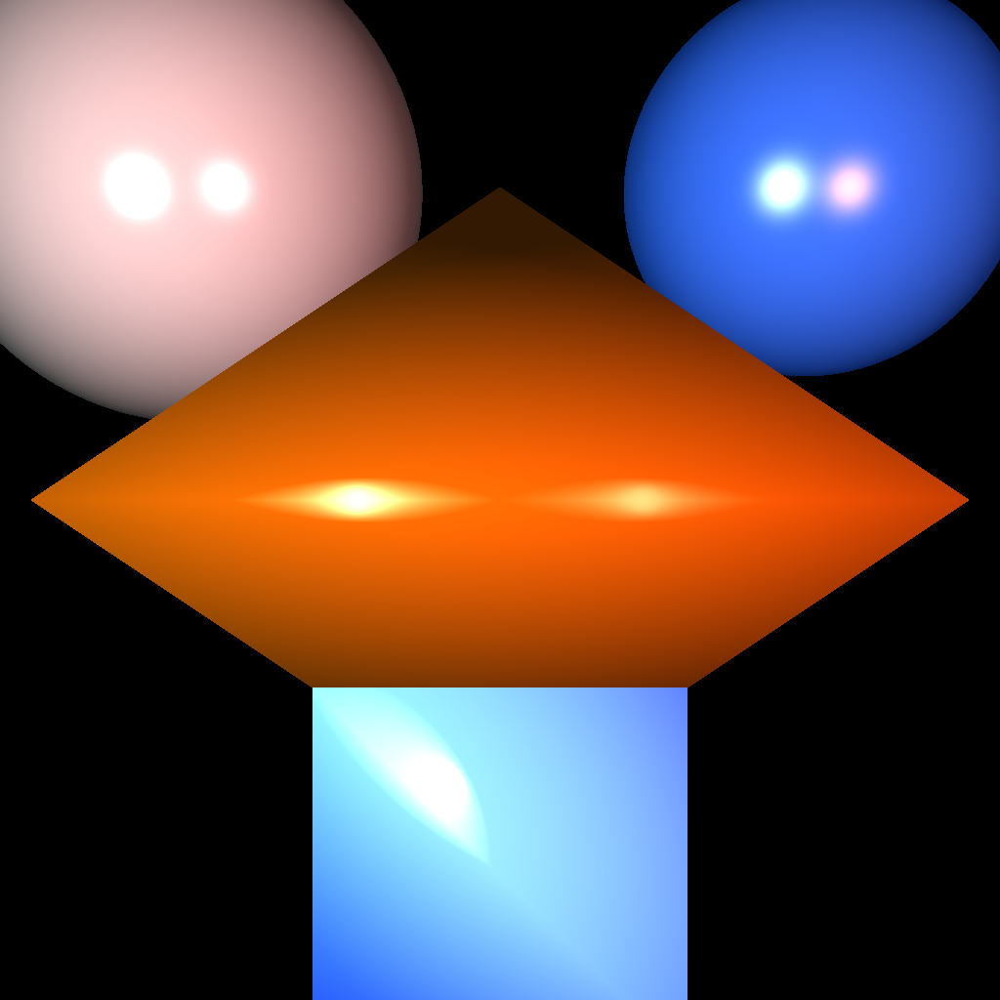

(Return to home)
Computation time: 12474.48 sec
Size: 1024x1024

Computation time: 0.179 sec after the 1024x1024 render
Size: 512x512
I'm looking forward to applying the optimizations since, as is evident from this render, my code takes an enormous amount of time to compute polygon meshes :)
Scene variables:
Camera at (3, 0, 0)
- View direction is (-1, 0, 0)
- Camera up angle is (0, 1, 0)
- Camera horizontal angle is (0, 1, 0)
Point Light at (3, 2, 0)
- Intensity (255, 255, 255)
- Attenuation value: 0.5
Point Light at (3, -2, 0)
- Intensity (255, 128, 128)
- Attenuation value: 0.5
Sphere with radius 0.25, with center of (0, -1.2, 1.3)
- Ambient color (3, 25, 76)
- Diffuse color (25, 51, 102)
- Specular color (255, 255, 255)
- Shinniness coeffecient: 10
Sphere with radius 0.25, with center of (0, -1.2, 1.3)
- Ambient color (3, 25, 76)
- Diffuse color (25, 51, 102)
- Specular color (255, 255, 255)
- Shinniness coeffecient: 80
Sphere with radius 0.4, with center of (0, 0, 0)
- Ambient color (76, 76, 76)
- Diffuse color (128, 163, 193)
- Specular color (255, 255, 255)
- Shinniness coeffecient: 5
Bridge (cube.smf) at origin - translated down and scaled by factor of (1,3,0.1)
- Ambient color (23, 63, 255)
- Diffuse color (153, 255, 255)
- Specular color (255, 255, 255)
- Shinniness coeffecient: 10
Floating AI Robot (monitor.smf) at origin - rotated 45 degrees
- Ambient color (25, 25, 25)
- Diffuse color (153, 255, 255)
- Specular color (255, 255, 255)
- Shinniness coeffecient: 2

Computation time: 300.06 sec
Size: 1024x1024
Computation time: 0.1863 sec after the 1024x1024 render
Size: 512x512
Scene variables:
Camera at (3, 0, 0)
- View direction is (-1, 0, 0)
- Camera up angle is (0, 1, 0)
- Camera horizontal angle is (0, 1, 0)
Point Light at (3, 1, 0)
- Intensity (255, 255, 255)
- Attenuation value: 0.5
Point Light at (3, -1, 0)
- Intensity (255, 128, 128)
- Attenuation value: 0.5
Sphere with radius 0.75, with center of (0, 1, 1)
- Ambient color (25, 25, 25)
- Diffuse color (178, 178, 178)
- Specular color (255, 255, 255)
- Shinniness coeffecient: 60
Sphere with radius 0.6, with center of (0, -1, 1)
- Ambient color (3, 25, 76)
- Diffuse color (51, 102, 204)
- Specular color (255, 255, 255)
- Shinniness coeffecient: 30
Octahedron (octahedron.smf) at origin
- Ambient color (51, 25, 2)
- Diffuse color (204, 102, 2)
- Specular color (255, 255, 255)
- Shinniness coeffecient: 1
Smooth shaded Cube (cube.smf) at origin - translated by (0,-1,0)
- Ambient color (23, 63, 255)
- Diffuse color (153, 255, 255)
- Specular color (255, 255, 255)
- Shinniness coeffecient: 1